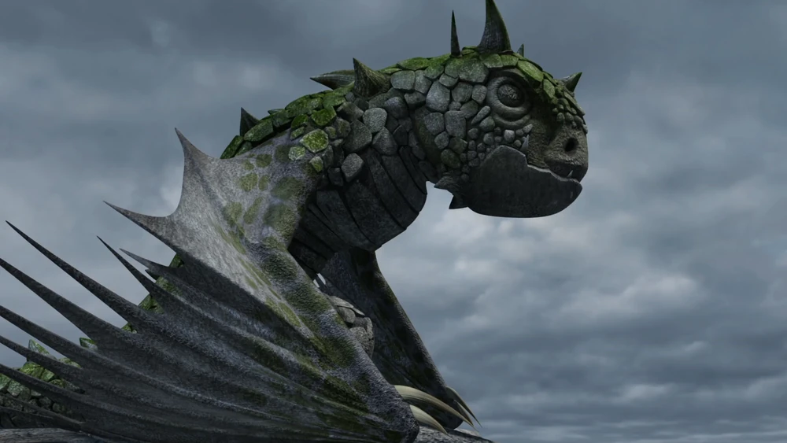
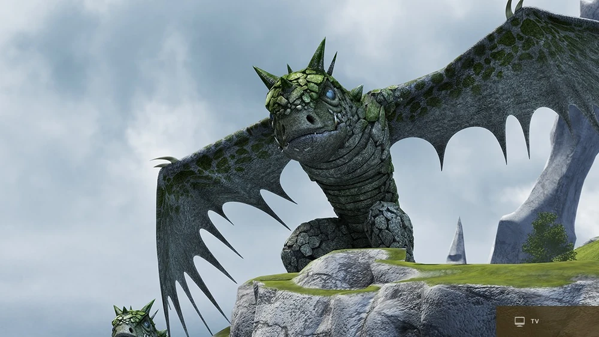
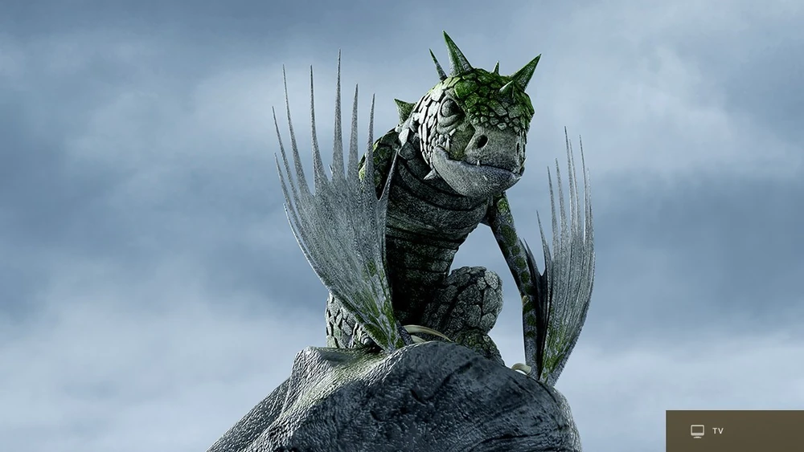
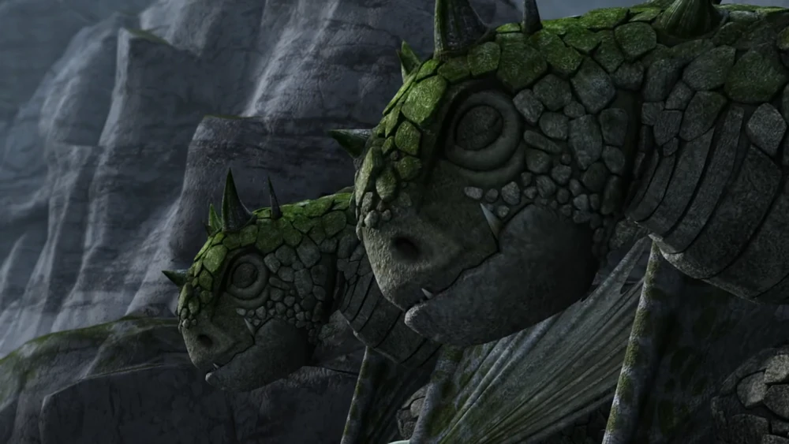
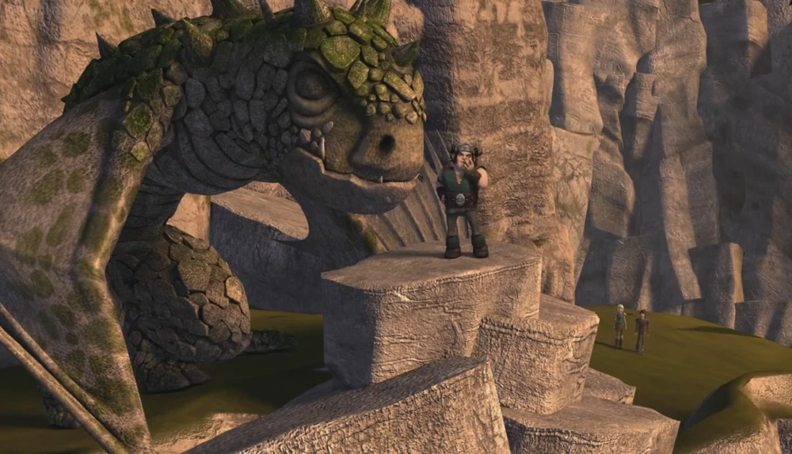
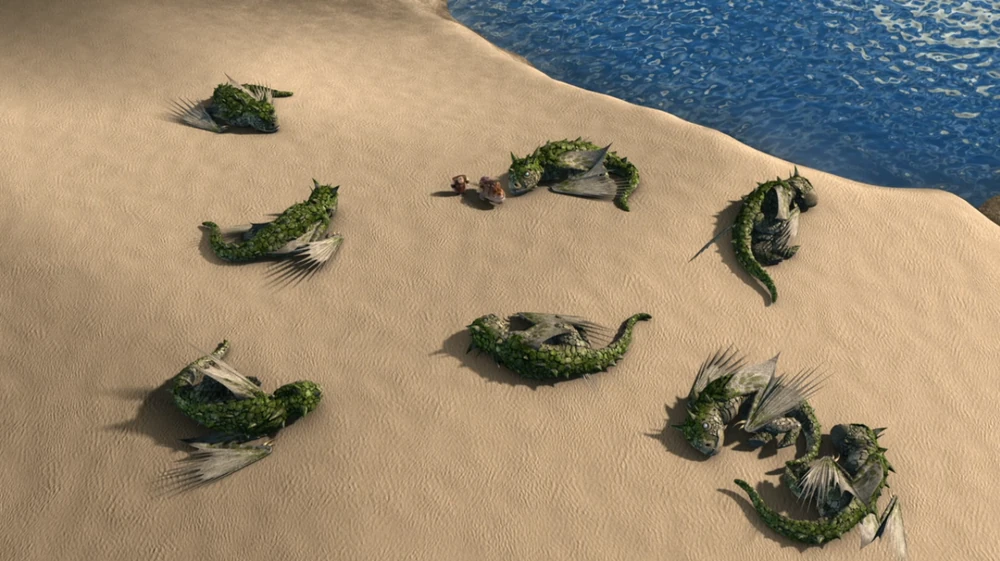
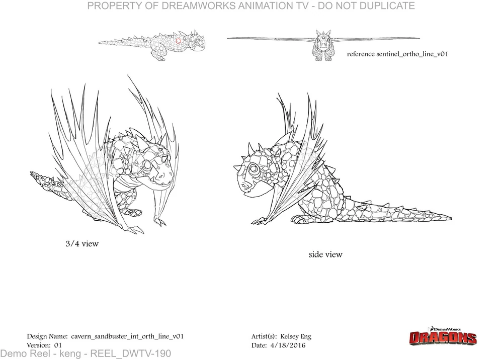
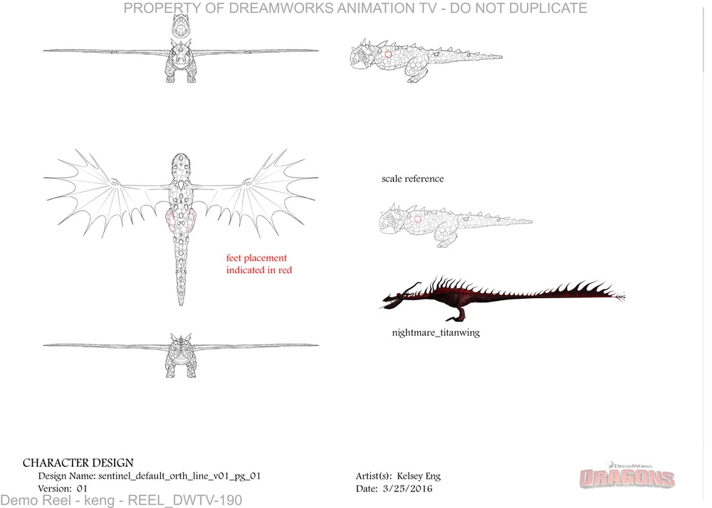

Home
Home
 About
About
 Dragons
Dragons
 Feedback
Feedback
 Sources
Sources
First appearance:
All appearances:
Behaviour and personality:
Sentinels are born for the sole purpose of guarding the funeral grounds of Vanaheim and assisting sick or dying dragons there. Because of this, they don't let any dragon leave and are quite territorial. They are extremely aggressive to Grim Gnashers because they prey on sick dragons.
They can remain so stationary that a millennia of snow can remain on the body of some without falling off. But the slightest hint of a threat can awaken them.
They exhibit kindness and fondness to the inhabitants of Vanaheim, and help construct funeral grounds while also providing food for the sick/dying dragon's last days.
Features:
Large body covered in tough rock-like epidermal layers and scutes
Rounded tail
Abilities:
Wing blasts
Remaining motionless for days at a time
Extremely developed senses except for sight
Hibernation
Diet:
Vanaheim fruit
Fish
Habitat:
Vanaheim
Dragon cemeteries
Size:
9,14 m (30 ft) [unrealistic/DreamWorks official measurement]
18,28 m (60 ft) [realistic/based on model sheet]
Wingspan:
18,3 m (60 ft) [unrealistic/DreamWorks official measurement]
31,82 m (104,416 ft)[realistic/based on model sheet]
Weight:
544,31 kg (1200 lbs)
Fire Type:
Funeral pyre fire
Sonic screech
Weaknesses:
Blind
Unknown dragons (dragon types that had never rested in Vanaheim)
Slow hibernation process (vulnerable to Grim Gnashers)
Trivia:
Shares statue-like similarities to the gothic-era gargoyles.
Has small pupils despite being blind.
Behaviour towards Vanaheim is possibly inspired by the behaviour of the Dragon Guardians of Tomorrow from the book series.
They don't have a tomb for their own resting place.
Fishlegs' Dragon Stats:
Attack: 12
Speed: 8
Armor: 15
Firepower: 6
Shot Limit: 8
Venom: 0
Jaw strength: 10
Stealth: 16
Gallery:
      Official concept art
Official concept art